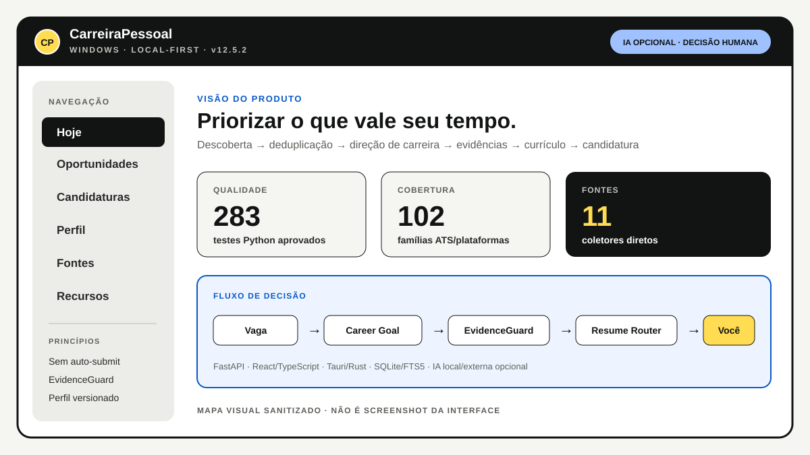

Problema
Eu encontrava as mesmas vagas em lugares diferentes, precisava revisar descrições manualmente e manter currículo, fatos e projetos sincronizados. A parte repetitiva consumia tempo antes mesmo da decisão de candidatura.
PRODUTO PESSOAL · WINDOWS · LOCAL-FIRST
PRODUTO PESSOAL EM USODescoberta de vagas, evidências, matching e currículo
Criei este produto para reduzir o trabalho repetitivo da minha busca de vagas sem entregar a decisão final para uma IA: ele organiza fontes, elimina duplicidade, compara direção de carreira, protege evidências e ajuda a selecionar o currículo adequado.

Eu encontrava as mesmas vagas em lugares diferentes, precisava revisar descrições manualmente e manter currículo, fatos e projetos sincronizados. A parte repetitiva consumia tempo antes mesmo da decisão de candidatura.
Descoberta em múltiplas fontes, normalização, deduplicação, entrada por link/texto/arquivo, Career Goal, perfil profissional versionado, EvidenceGuard, Resume Router/Fitness, timeline de candidatura e assistente de navegador.
O núcleo funciona sem provedor de IA. Matching local, regras de carreira, deduplicação e controles continuam disponíveis; Ollama, LM Studio e provedores externos entram apenas quando acrescentam capacidade e podem ser desligados.
O sistema pode ajudar a preparar, mas não inventa experiência e não envia candidatura sozinho. CAPTCHA, termos do site e envio final continuam humanos; claims sensíveis precisam de evidência suficiente.
Arquitetura
Fontes / link / arquivo → normalização → deduplicação → Career Goal → matching → EvidenceGuard → Resume Router → candidatura → assistente do navegador → envio manual.
Privacidade
O repositório público é uma edição sanitizada. Banco pessoal, candidaturas, credenciais e dados de terceiros não são publicados.
A evidência pública prioriza arquitetura, regras e código sanitizado. A versão completa v12.5.2 é o produto pessoal que uso; os números de teste validam seus contratos, não uma suposta acurácia universal de IA.